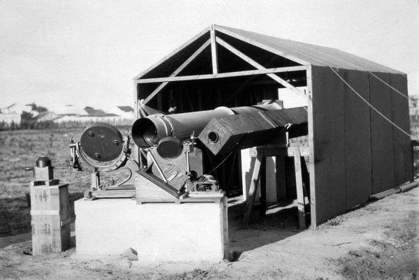

Tres pruebas que confirmaron a Einstein
Buscando el éter
Buscaban el éter, el supuesto medio por el que viajaba la luz, con un interferómetro. Si existía, al girar el aparato las franjas se correrían 0,4. No se movieron. Fue la base de la Relatividad Especial.

Interferómetro
Simulador 4ΔN = 2Lv² / (λc²) con brazos de L = 11 m (luz reflejada varias veces) y λ = 500 nm.
43″ que Newton no explicaba
La órbita de Mercurio gira lentamente. Los otros planetas explicaban casi todo ese giro, pero sobraban 43″ por siglo. En 1915 la Relatividad General dio exactamente ese valor.
Pruebas posteriores: Pound y Rebka (1959), relojes atómicos en aviones de Hafele y Keating (1971), ondas gravitacionales de LIGO (2015).
Precesión del perihelio de Mercurio
Simulador 5Δφ = 6πGM / (c²a(1 − e²)) por órbita, con a = 57,9 millones de km y e = 0,2056.
La luz se curva cerca del Sol
Einstein predijo que el Sol desviaría la luz de las estrellas. Eddington lo midió en el eclipse del 29 de mayo de 1919, en Sobral (Brasil) y Príncipe (África). El resultado fue compatible con Einstein: el doble de lo que daba Newton.

Desviación de la luz por el Sol
Simulador 6Ángulo dibujado exagerado 12.000 veces. ″ = segundo de arco (1/3600 de grado).